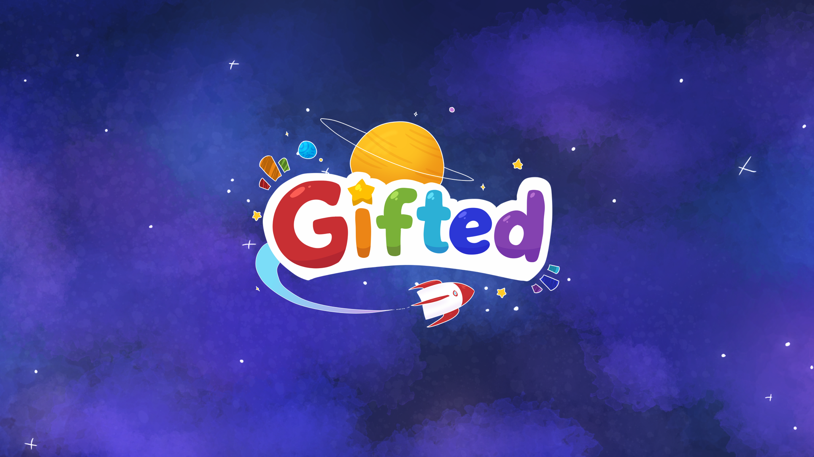
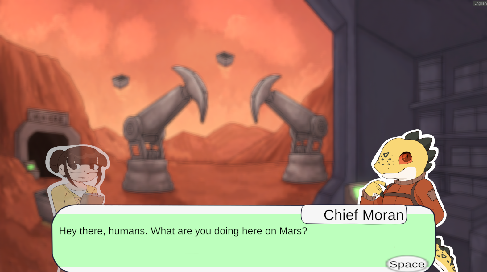
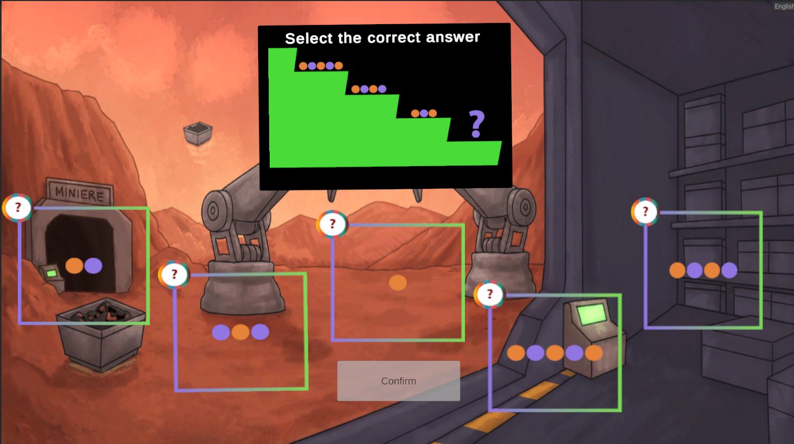
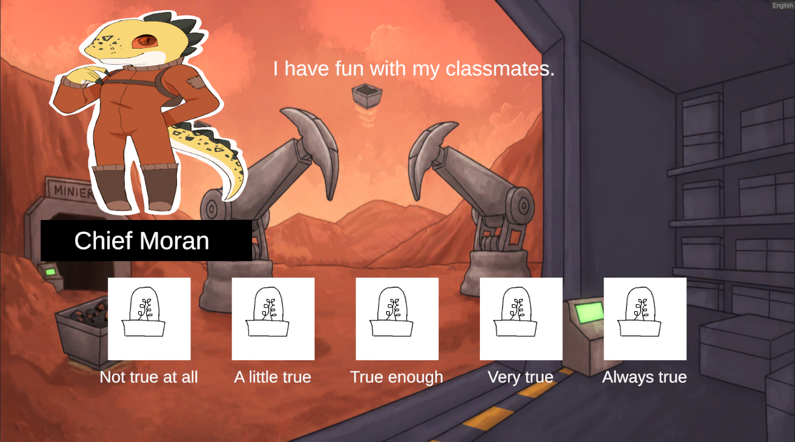
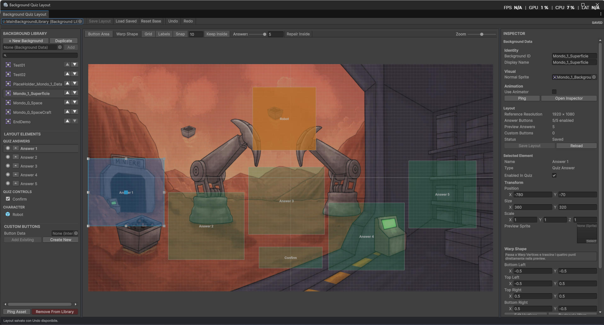
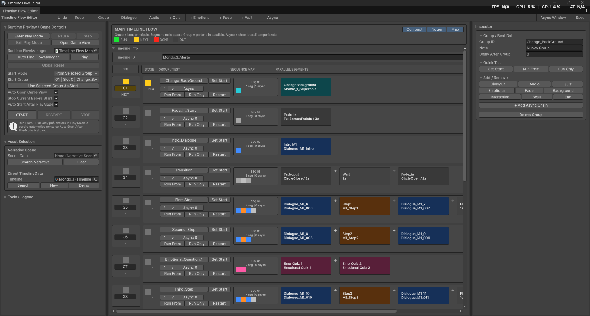

INTERNSHIP / GAME DEVELOPMENT
Project Gifted — Visual Novel & Quiz System

OVERVIEW
CORE SYSTEMS
DEVELOPMENT IMAGES

Visual Novel Dialogue

Quiz System

Socio-emotional Question

Screen Authoring

Timeline Flow Editor
VALUE OF MY CONTRIBUTION